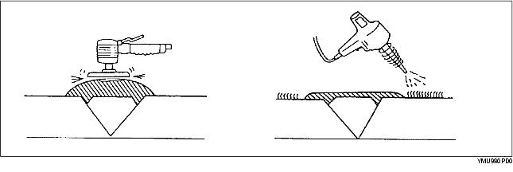

Reparation av stötfångare i polypropylen med en skada som har gått ner i ytan på polypropylenet är för stor för att det ska gå att reparera med enbart färg.
1. Skär rent kanterna på det skadade partiet med en kniv. Slipa med sandpapper för att åstadkomma en vinkel på cirka 45°.
2. Svetsa det skadade området.
3. Smält en svetspinne av polyprolylen och applicera smältan på skadan.
4. Slipa ytan försiktigt eftersom plasten kan smälta av friktionsvärmen. Slipa det skadade området och förbered för målning.
5. Stryk på polypropylen-primer med en pensel på en yta som är större än det skadade området. Låt det torka cirka 10 minuter i 20 °C {68 °F}.
6. Blanda bas och härdare i förhållandet ett till ett. Stryk på det på det skadade området.

Reparationsmedlet består av ett tvåkomponents epoxi.
Vid härdningen kommer det att ha en god yta med samma flexibilitet som propylenet.
Även reparationsmedlet för en uretan-stötfångare är av tvåkomponentstyp. Reparationsmedlet skiljer sig emellertid från det som används vid reparation av stötfångare i polypropylen. Om fel reparationsmedel används, kommer reparationen att misslyckas.
7. Slipa området med 180-240 sandpapper.

8. Avfetta den målade ytan.
9. Blanda primer och härdare i förhållandet ett till ett. Applicera primer på det reparerade området med en pensel eller spraya.
Använd primern inom 16 timmar efter det att den är blandad.
10. Låt detaljen torka.
11. Lägg till mjukgörare till uretanslip-primern och spraya det på det reparerade området.
12. Lufttorkning 20 °C {68 °F} - 8 timmar minimum.
Tvingad torkning 60 °C {140 °F} - 1 timme
13. Slipa hela området lätt med 400-600 sandpapper. Slipa inte fram polypropylenytan. (Våt- eller torrslipning är ok.)
14. Torka av hela området på stötfångaren med ett avfettningsmedel. Torka snabbt av ytan med en ren trasa för att avfetta ytan.
15. Måla stötfångaren i lämplig färg.
16. Lufttorkning 20 °C {68 °F} - 8 timmar minimum.
Tvingad torkning 60 °C {140 °F} - 1 timme